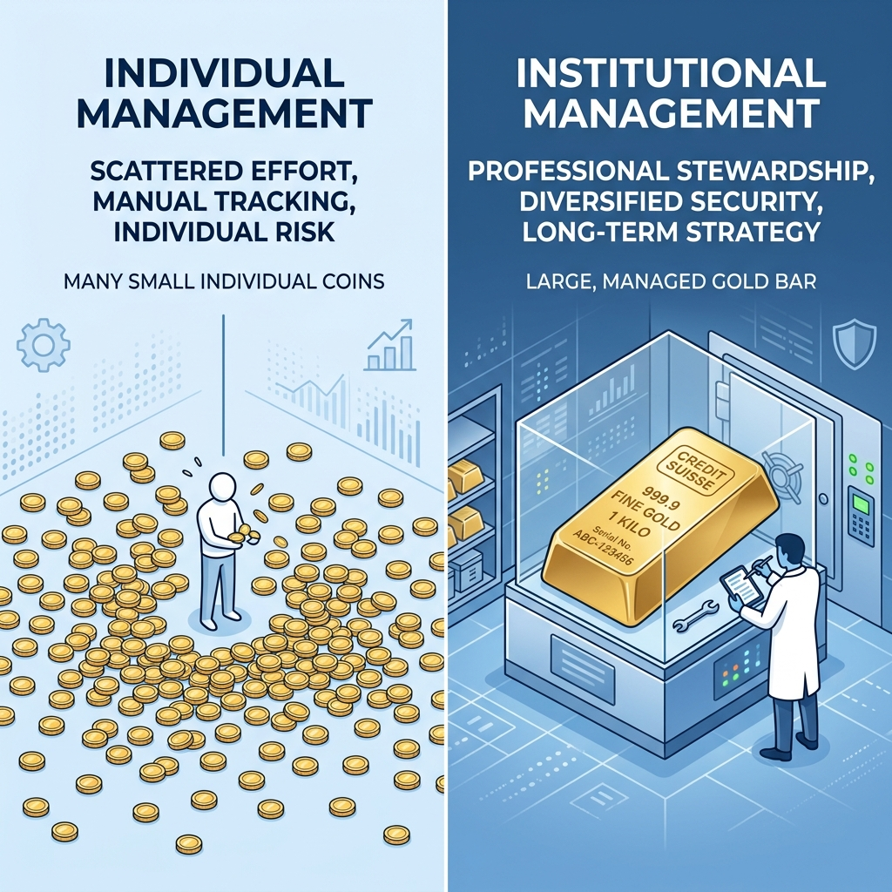
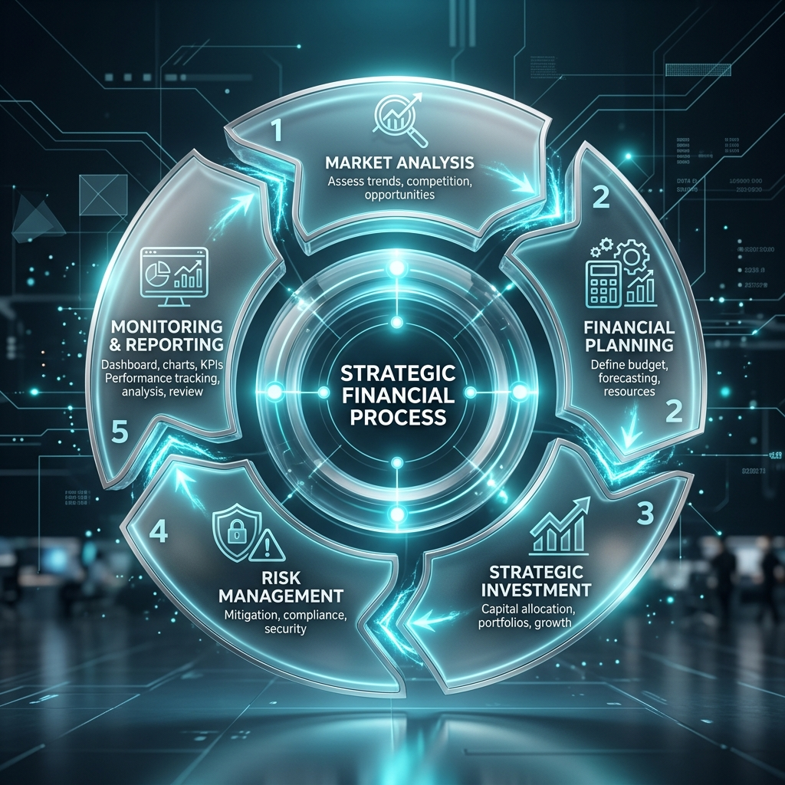
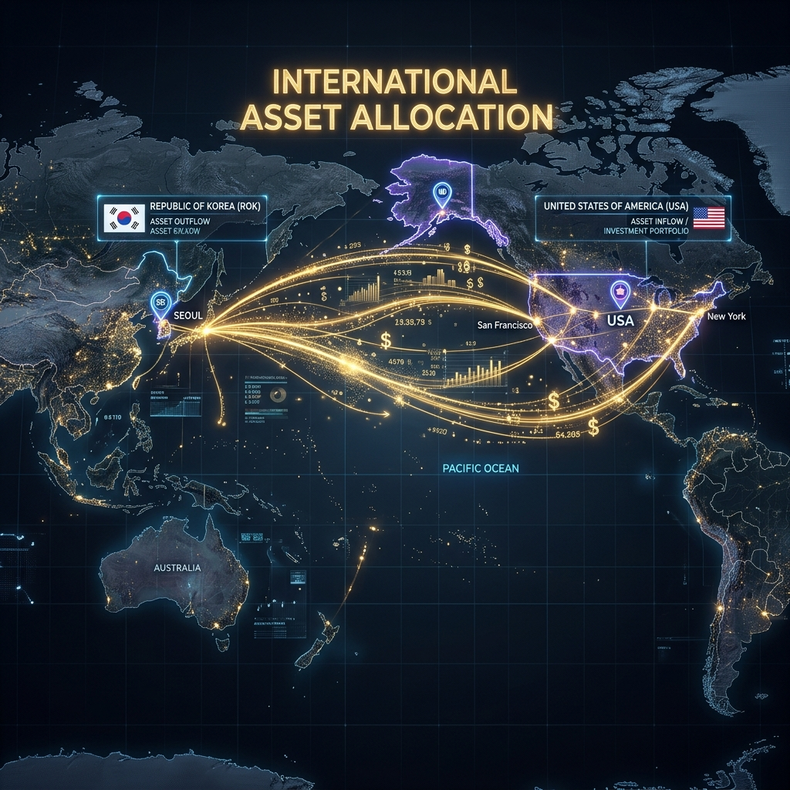
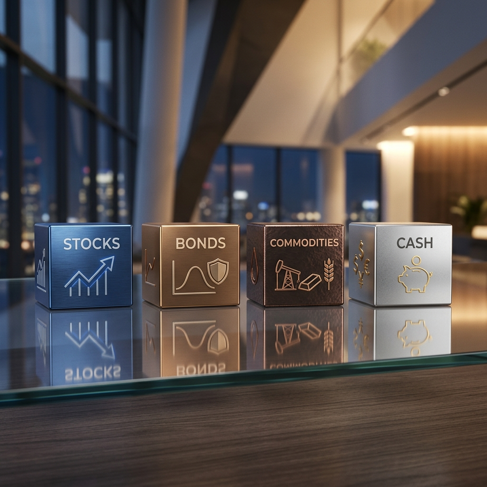
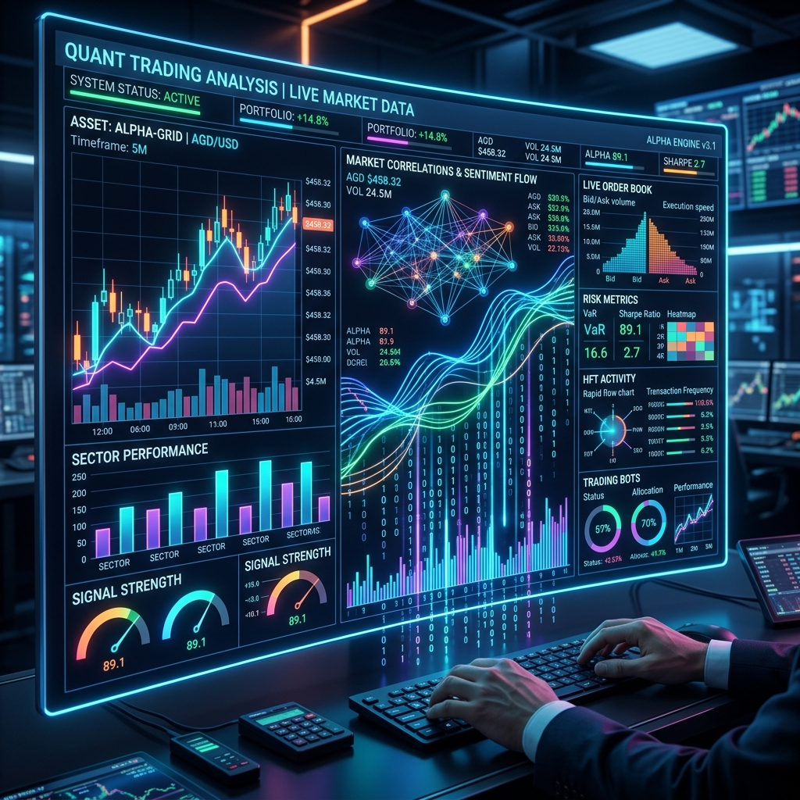
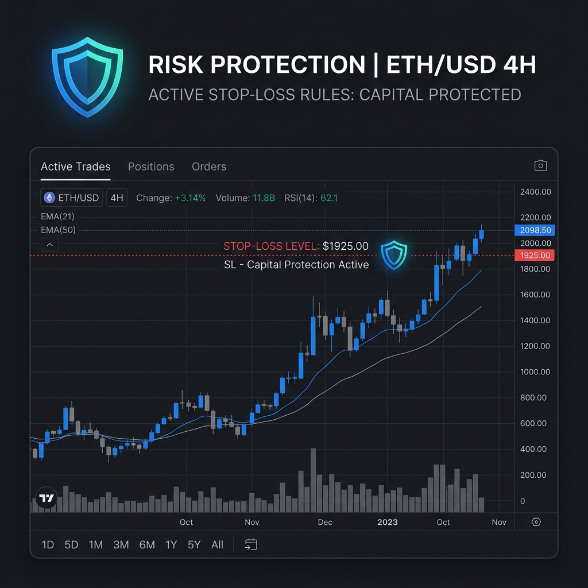
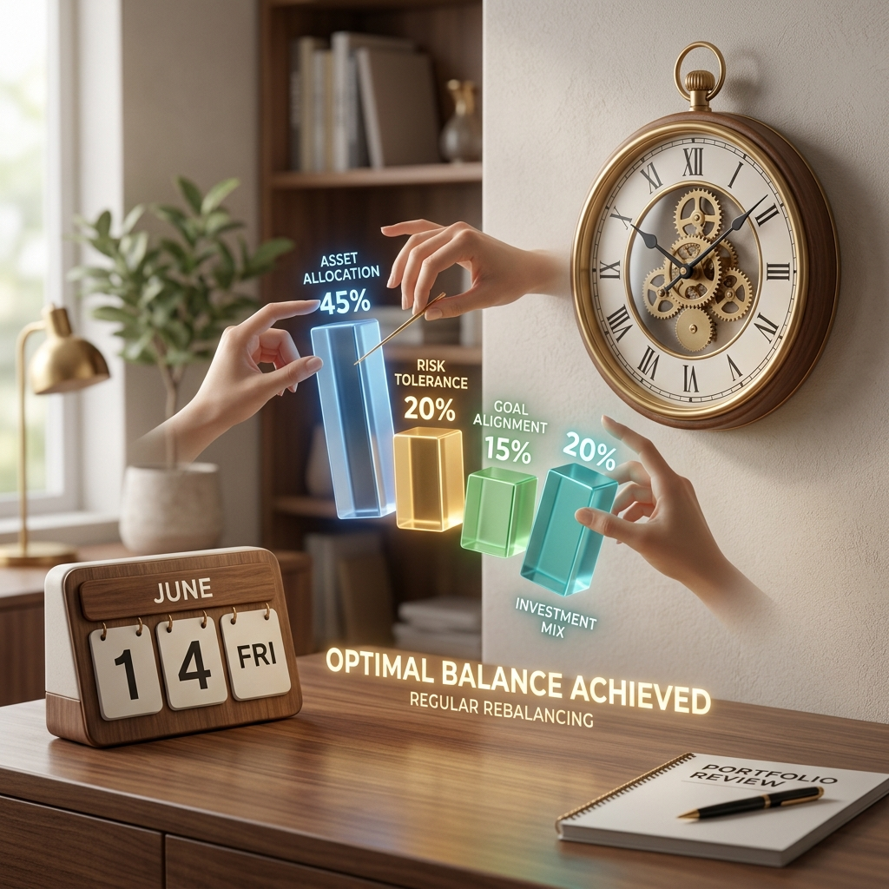

Premium Framework
현명한 ETF 투자 방법
누구나 배워 익혀 자신만의 자산 포트폴리오를 구성하고 효과적으로 관리함으로써 노후 부자가 될 수 있도록 돕는 프레임워크
By ETFstyle, 김세형
누구나 배워 익혀 자신만의 자산 포트폴리오를 구성하고 효과적으로 관리함으로써 노후 부자가 될 수 있도록 돕는 프레임워크
By ETFstyle, 김세형


ETFstyle 5단계 자산관리 프레임워크 개괄

자신만의 규칙으로 국가별 비중을 정의합니다.

자산 규모와 성향에 맞춘 흔들림 없는 뼈대

데이터 기반의 규칙으로 감정을 배제합니다.

언제 사고 팔 것인가에 대한 명확한 해답

장기적인 우상향을 위한 필수 관리 작업